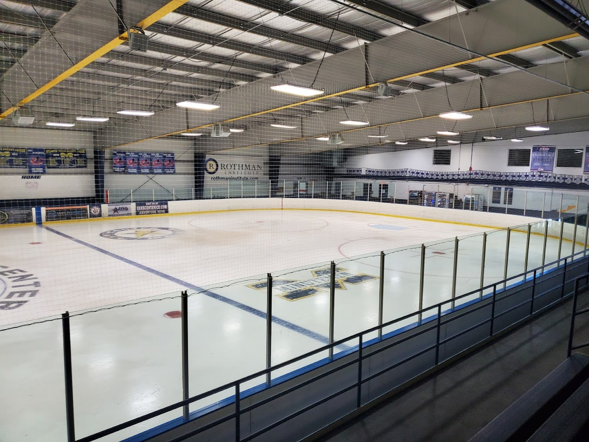
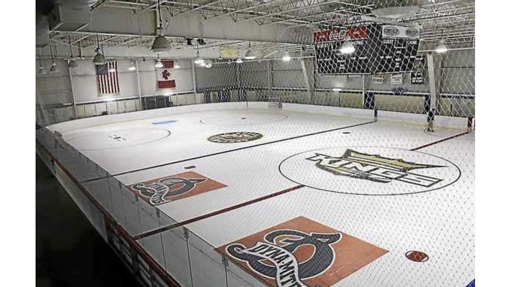
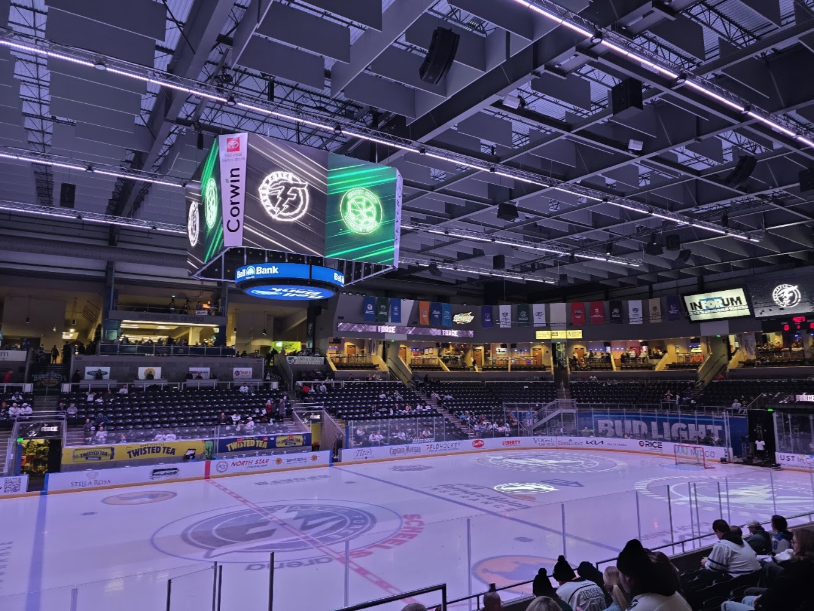
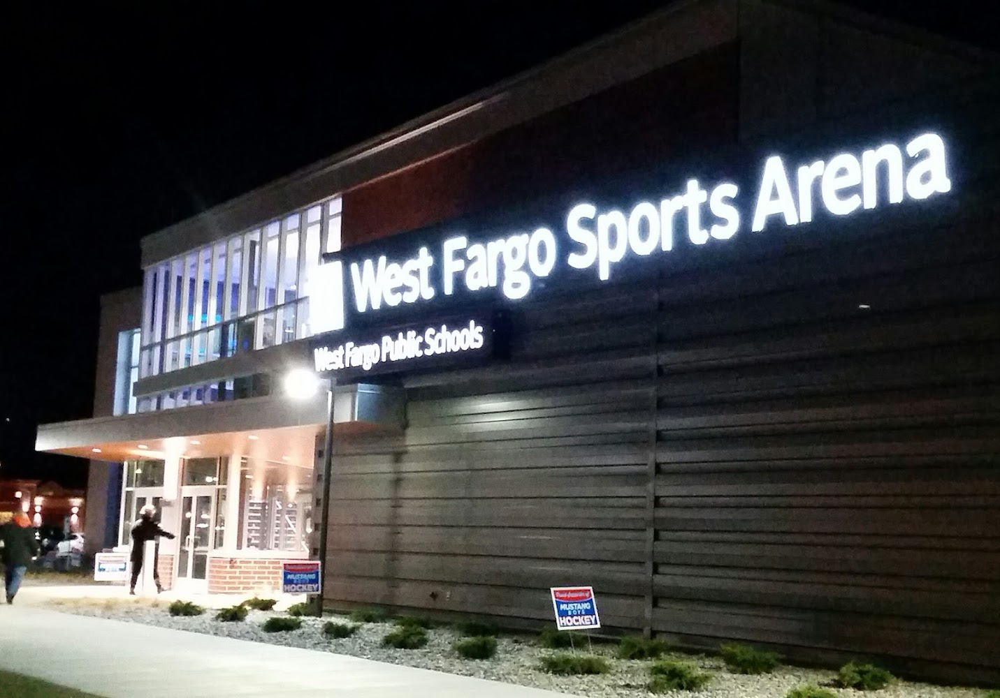
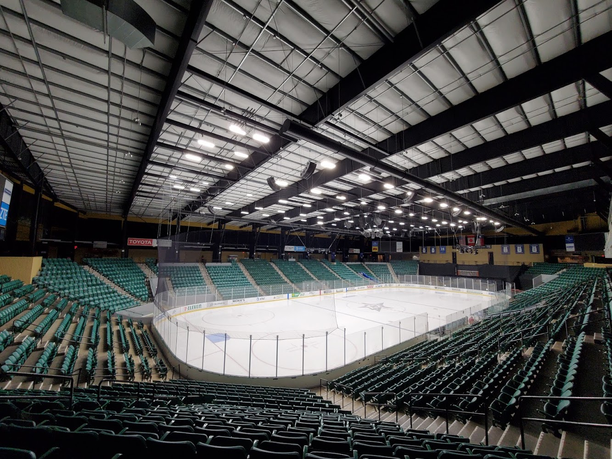
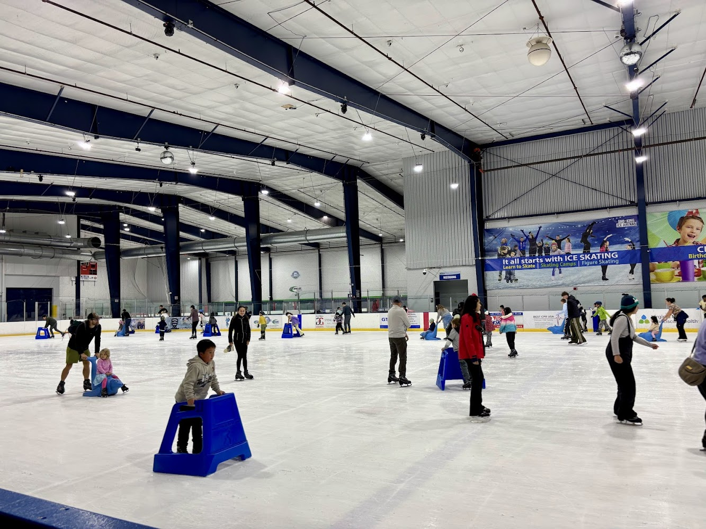

Oaks Center Ice
This is where it all started! I took my learn to skate classes here because I had never skated in my life prior to moving here. They also had an amazing learn to play hockey program! They also had a morning shinny program that was great! Allowed me to play prior to going to work.
Visit Website
Power Play Rinks
The best public skate in Pennsylvania - my friend and I would go here for our lunch break to skate. We were often the only two people skating during lunch. Right before I moved - they started a great learn to play hockey program. I met some great people there and if I lived closer to this rink when I lived in PA I would have gone to it a lot more.
Visit Website
Scheels Arena
I moved to Fargo, ND after about a year of skating. This was a trial by fire - but it was the most fun I have ever had playing hockey. I loved the teams I played on, everyone was encouraging even though there was a major skill gap. I miss Fargo a lot!
Visit Website
The West Fargo Sports Arena
This rink is primarily where I played with Hockey Finder - its an excellent program - met a lot of amazing people that skated with this league as well. Fargo, West Fargo, and Moorhead is just a great area to live in if you play hockey or want to play hockey. There are outdoor rinks in the winter as well - I think there are 17 rinks in total in this area.
Visit Website
Richardson Star Center
When I moved to Dallas, TX this was the closest rink to where I live. They have a few different leagues down here but because of the size of the Dallas metro area - and the way they do "travel hockey" for adults I cannot recommend the Stars Adult Recreational League. There are teams that play in Richardson and only Richardson - I met some good guys but the cost of hockey here was a shell shocker Sno-King Ice Arena - Renton Sno-King Ice Arena Renton This arena is a lot of fun, but its also expensive - cheaper than Texas though! They have 5 vs 5 and 3 vs 3 leagues, I play on both! They have a large sheet of ice and a smaller sheet of ice in Renton. The SKAHL league is in comparison to Fargo.
Visit Website
Sno-King Ice Arena Renton
This arena is a lot of fun, but its also expensive - cheaper than Texas though! They have 5 vs 5 and 3 vs 3 leagues, I play on both! They have a large sheet of ice and a smaller sheet of ice in Renton. The SKAHL league is a fun league, 5 vs 5 also plays in Snoqualmie which I don't like but in the future maybe I can just do half seasons vs driving 40 miles away.
Visit Website